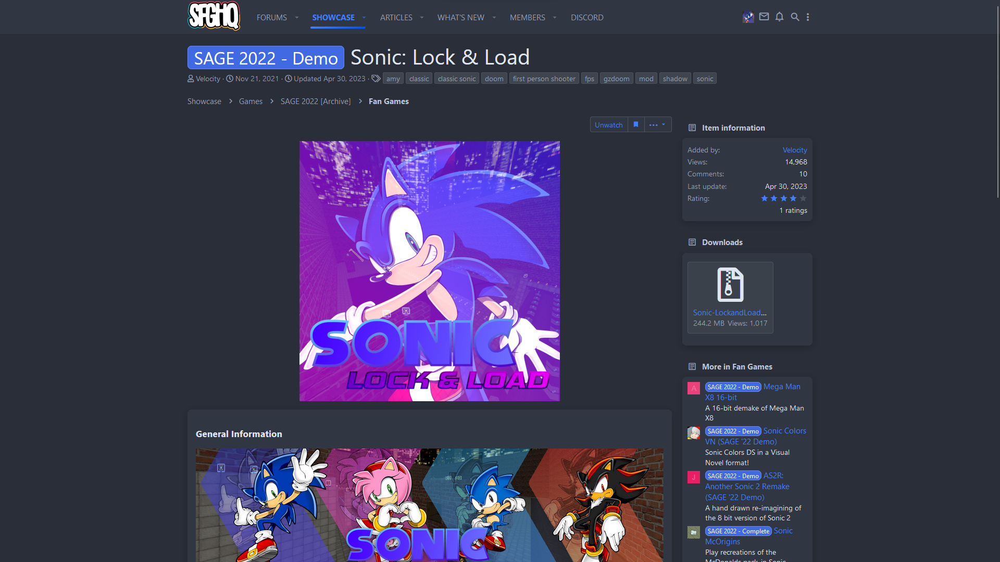

The History of Sonic: Lock & Load v1.4's Development
I don't really feel like talking about v1.4's minor development hell, but I'm going to anyway.
Before SAGE
In the year of our lord 2022, before I knew of SAGE and SFGHQ, Sonic: Lock & Load was a small-time mod that was just hosted on GitHub. (still is nowadays, just not exclusively!)
By the time I decided to enter the project into SAGE 2022, I had just finished the v1.3.3 update.
Back then, Sonic: Lock & Load wasn't much of a fan game - it was more of a DOOM mod about Sonic, and an experimental one at that.
It was only when I decided to enter it into SAGE that I realised how much of a headache I was in for.
SAGE 2022
So, you remember SAGE 2022? How Sonic: Lock & Load was a part of that?
 Holy crap, the Final Final Demo has over a thousand downloads.Yeah, that brought more interest into this project, but also it gave me an insight on what I was doing wrong.
Unfortunately, instead of just let them have the broken and unpolished demo, I made three demos for Horizons. THREE.
The Three Demos
The SAGE 2022 demo was literally just the unfinished v1.4 update with some stuff removed from it to make it feel more demo-y.
There really wasn't much to it - it was just v1.3.3 with some much-needed polishes and a shiny new level.
I pretty much only made the SAGE 2022 demo because I panicked and uploaded v1.3.3 to SAGE 2022 like an idiot.
I really didn't put any thought into it.
The Final Demo was only slightly better than the SAGE 2022 demo.
And by that I mean, it used a slightly less unfinished but still unfinished version of v1.4.
Literally, it was the same thing - just updated, and based on a newer version of the update.
The Final Final Demo is where I actually started listening to feedback.
This demo actually took steps to make sure that the game was more polished and ready for all those YouTubers to play and review.
Which really helped - the alternative would be giving them the Final Demo or SAGE 2022 demo!
Additionally, the Final Final Demo included a more new-to-DOOM-mods-user friendly package, that included a Sonic-LockandLoad.exe file, which was just gzdoom.exe renamed.
It was still hard getting people to realise you need DOOM2.wad or freedoom2.wad, though.
God, I'm glad I stopped at Final Final.
After All That
After the hype from SAGE had died down a bit, I decided I would actually make this update good, like, REALLY good.
I took feedback from people who enjoyed and didn't enjoy Sonic: Lock & Load - and I put those polishes and gameplay additions and tweaks into what would become v1.4 "Horizons".
No longer bound by a deadline once more, I took my time with this update. The Chaos Update (v1.0) had taken long enough in its own right to come out, but Horizons was looking up to take even longer.
And during that, I decided to promote Sonic: Lock & Load a bit more by creating pages on itch.io and Mod DB. The Mod DB stuff definitely helped to boost interest, especially with people used to DOOM mods.
I also ended up making a Discord server, which is currently rather quiet, but that's okay.
Missing SAGE 2023
Even more unfortunately, I got so involved in these changes that I forgot SAGE 2023 happened and completely missed it, which is why Horizons is slated for a December release, not September like I originally planned.
I just hope v1.5 will be a bit less chaotic.